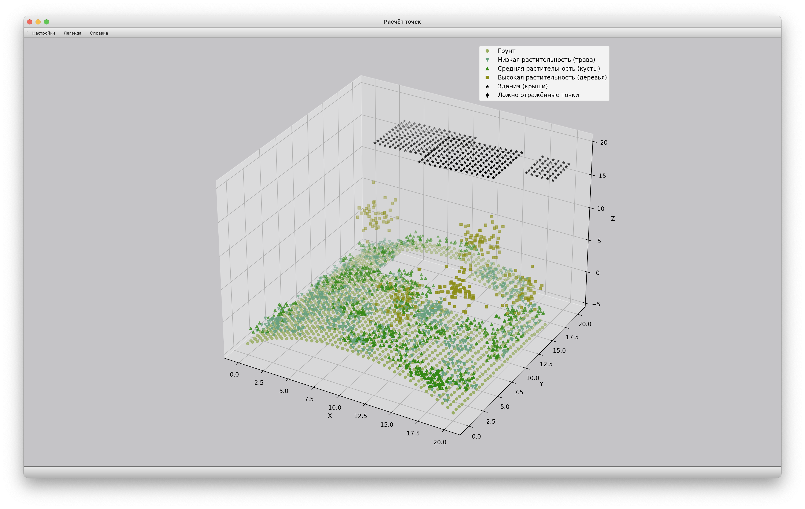

Справка
Интерфейс
Главное окно
На рисунке выше числами отмечены функциональные элементы:
- Кнопка меню "Настройки". Открывает окно настроек программы.
- Кнопка меню "Легенда". Позволяет включать и выключать отображение легенды на графиках.
- Кнопка меню "Справка". Открывает текущее окно.
- Путь к файлу с координатами точек. Не редактируемое поле.
- Кнопка "Открыть". Вызывает диалог выбора файла с координатами точек. Выбранный путь к файлу
отобразится в поле [4].
После загрузки файла автоматически производится его обработка, и на графике [11]
отображаются содержащиеся в нем точки.
- Кнопка "Рассчитать". Запускает работу нейронной сети. В качестве результата строит точки на
графике [12]
и выводит точность нейронной сети в поле [13].
- Кнопка "Сбросить". Очищает график [12] и результат работы нейронной
сети в поле [13].
- Путь к файлу экспорта в Excel. Не редактируемое поле.
- Кнопка "Выбрать". Вызывает диалог выбора файла для экспорта результатов работы нейронной
сети в Excel.
- Кнопка "Выгрузить". Осуществляет экспорт результатов работы в выбранный файл.
- График исходных значений. Заполняется в момент выбора файла после нажатия кнопки [5].
- График, отражающий результат работы нейронной сети. Заполняется после нажатия кнопки [6].
- Поле вывода результатов нейронной сети.
Окно настроек
На рисунке выше числами отмечены функциональные элементы:
- HEX-код цвета фона графиков. Значение по умолчанию:
#ffffff.
- Кнопка выбора. Вызывает диалог выбора цвета для поля [1].
- Настройка отображения для точки определенного класса.
- HEX-код цвета точки. Значение по умолчанию:
#000000.
- Кнопка выбора. Вызывает диалог выбора цвета для поля [3.1]
- Поле выбора формы точки. Представлен выбор из 25 вариантов.
- Поле ввода названия класса. Данное название отображается в легенде на графиках.
- Кнопка отмены. Закрывает окно, не сохраняя сделанные изменения в настройках
- Кнопка сохранения. Закрывает окно, сохраняет и применяет настройки.
Функционал
Программа работает с размеченными файлами, содержащими координаты точек. Формат файла:
КЛАСС_ТОЧКИ КООРДИНАТА_X КООРДИНАТА_Y КООРДИНАТА_Z
или
КООРДИНАТА_X КООРДИНАТА_Y КООРДИНАТА_Z
Например,
2 0 0 -3.83641670396183
2 0 0.5 -3.8323789447179
2 0 1 -3.83373747825048
2 0 1.5 -3.84868682036131
2 0 2 -3.6971141125109
или
0 0 -3.83641670396183
0 0.5 -3.8323789447179
0 1 -3.83373747825048
0 1.5 -3.84868682036131
0 2 -3.6971141125109
Если в файле класс точки не задан, программа определяет ее "Неизвестной". При этом метрика качества
нейронной сети в поле [13] будет выводить значение точности, равное нулю.
Взаимодействие
Для взаимодействия с графиками используется мышь:
- При движении курсора с зажатой левой клавишей мыши, график будет вращаться вокруг собственного центра.
- При движении курсора с зажатым колесиком мыши, график будет смещать центр.
- При движении курсора с зажатой правой клавишей мыши, график будет менять масштаб.
- Двойное нажатие левой кнопкой мыши развернет график, заполнив им рабочую область окна.
Повторное двойное нажатие вернет его к исходным размерам.

Нейронная сеть
На вход подается 120 точек.
Во входном слое 120 нейронов, в выходном –
6.
Количество скрытых слоёв: 2 (200 и 120 нейронов
соответственно).
Функция активации на входных и скрытых слоях – ReLu, на выходном
SoftMax.
Оптимизатор сети – Adam со скоростью обучения 0.0001.
Количество
эпох – 30.
Для предсказывания результатов работы модели используется функция predict()
пакета keras.models на языке Python.